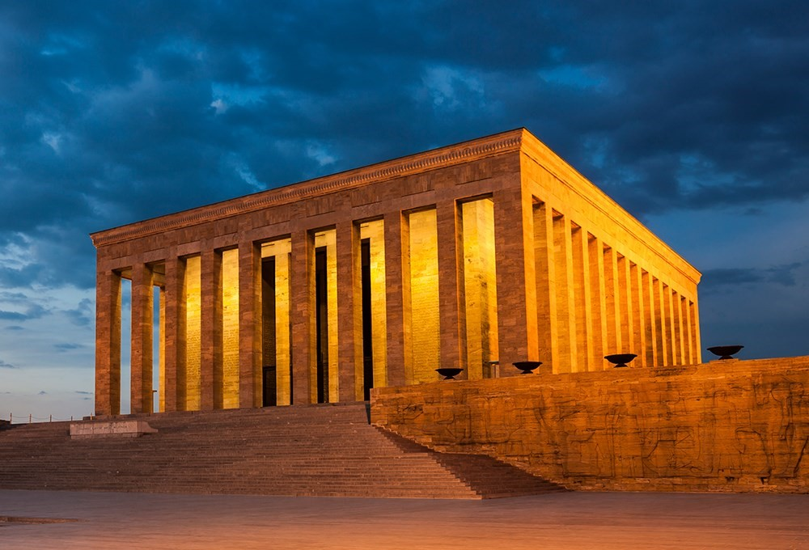
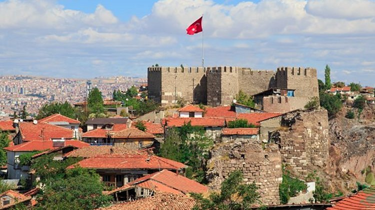
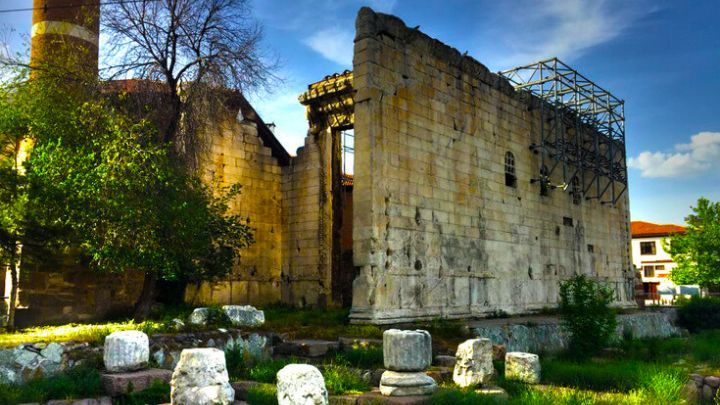
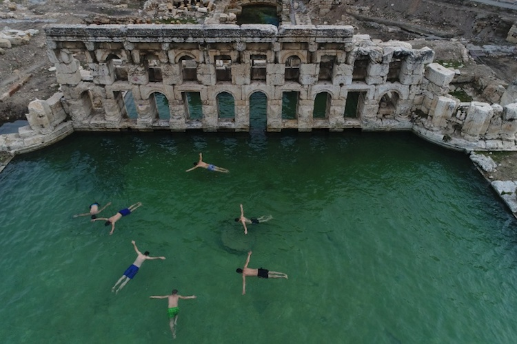
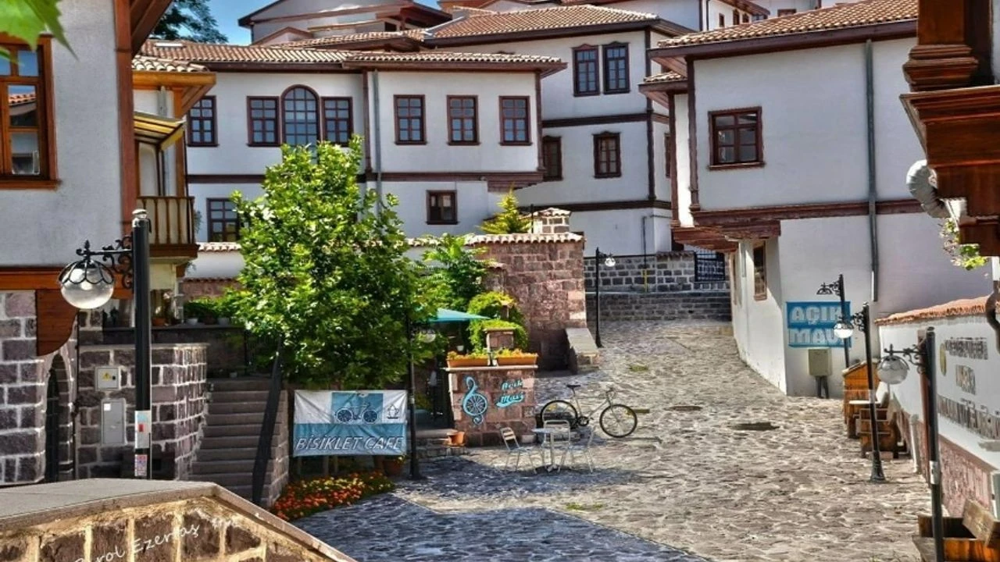

Mustafa Kemal Atatürk'ün ebedi istirahatgâhı olan Anıtkabir, hem mimarisiyle hem de manevi değeriyle Ankara'nın en önemli yapısıdır.
Adres: Anıttepe, Tandoğan/Ankara
Ziyaret Saatleri: Her gün 09:00 – 17:00
Giriş: Üretsiz

Roma, Bizans ve Osmanlı dönemlerinden izler taşıyan bu tarihi kale, Ankara’nın en eski yapılarından biridir.
Adres: Kale Mah., Altındağ/Ankara
Ziyaret Saatleri: Her gün 08:00 – 20:00
Giriş: Üretsiz

Roma dönemine ait olan bu tapınak, Hacı Bayram Veli Camii'nin hemen yanında yer alır ve iki uygarlığın izlerini taşır.
Adres: Ulus Meydanı, Altındağ/Ankara
Ziyaret Saatleri: Gündüz saatlerinde açık
Giriş: Üretsiz

3. yüzyıldan kalan bu kalıntılar, Ankara’nın antik Roma dönemine dair önemli bir arkeolojik alanıdır.
Adres: Çankırı Cd. No:43, Altındağ/Ankara
Ziyaret Saatleri: 09:00 – 18:00
Giriş: Üretli (Tam: 40 TL)

Restorasyonlarla yenilenmiş bu tarihi Osmanlı semti, cafeleri, sanat evleri ve geleneksel evleriyle Ankara'nın nostaljik yüzünü sunar.
Adres: Talatpaşa Bulvarı, Altındağ/Ankara
Ziyaret Saatleri: Her zaman gezilebilir
Giriş: Üretsiz